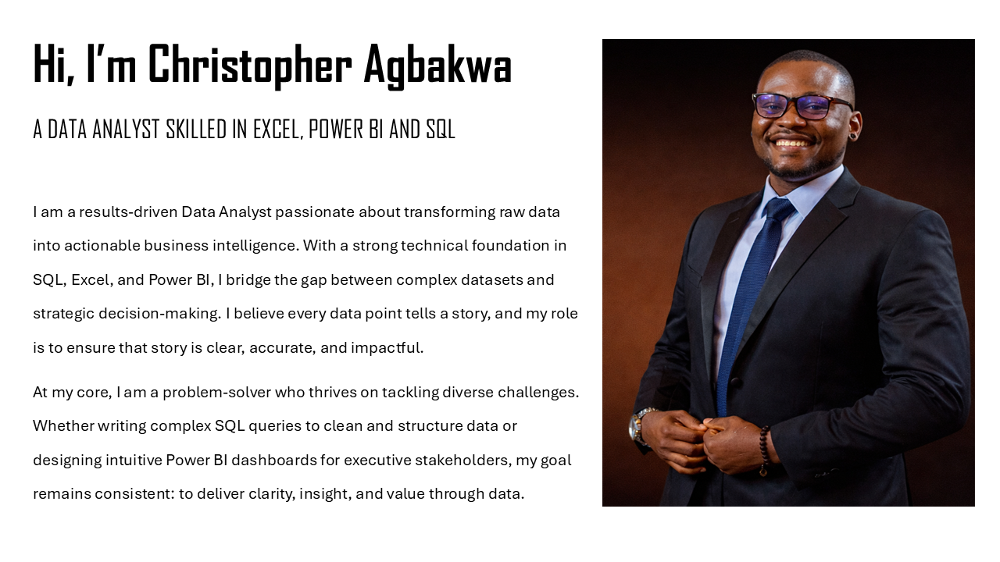

I am a results-driven Data Analyst passionate about transforming raw data into actionable business intelligence. With a strong technical foundation in SQL, Excel, and Power BI, I bridge the gap between complex datasets and strategic decision-making. I believe every data point tells a story, and my role is to ensure that story is clear, accurate, and impactful.
In Commercial Analytics, I have extensive experience analyzing sales data to uncover insights into brand performance. By developing dynamic dashboards, I enable stakeholders to identify high-growth products and underperforming segments.My approach goes beyond reporting—I focus on uncovering the underlying drivers behind trends, helping businesses refine their market positioning and maximize ROI.